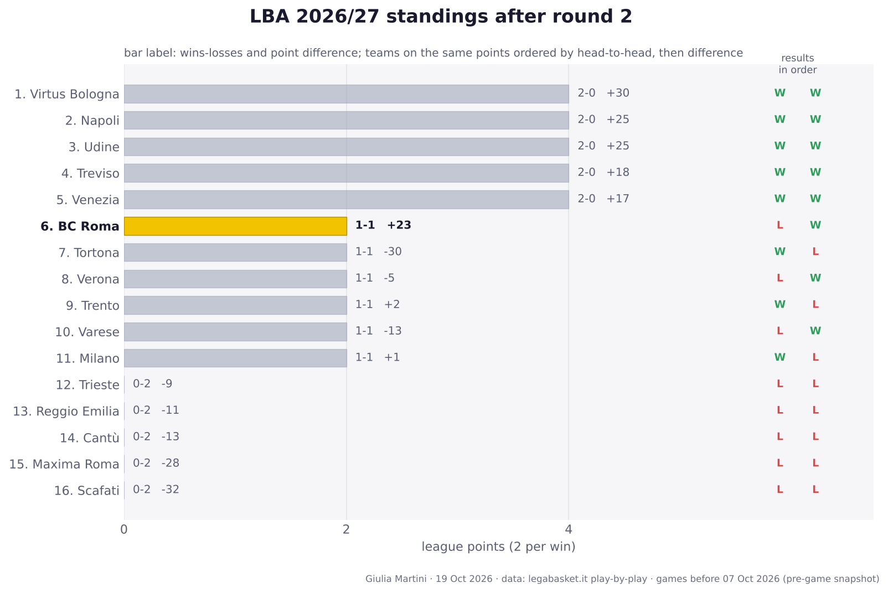
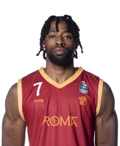
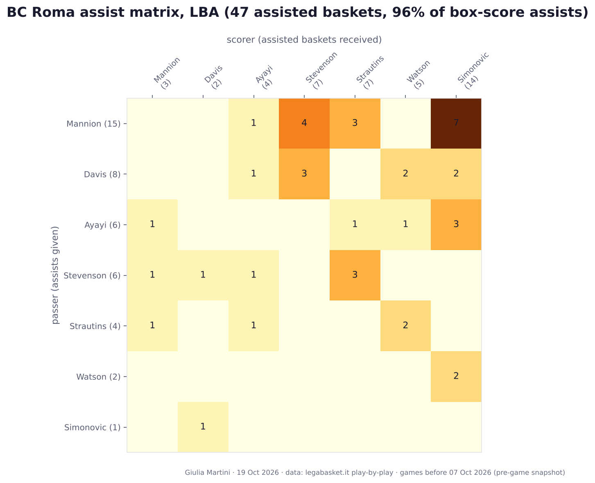
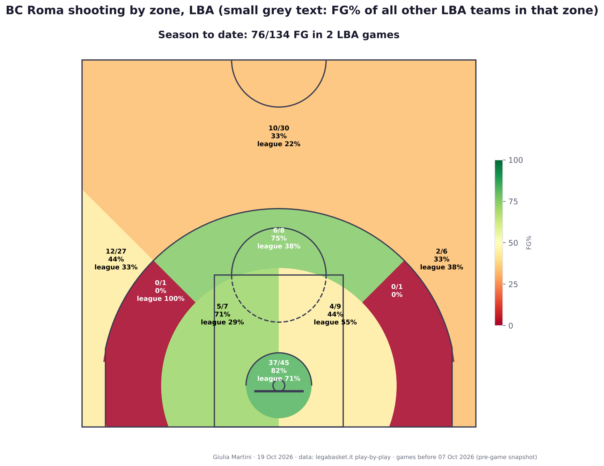
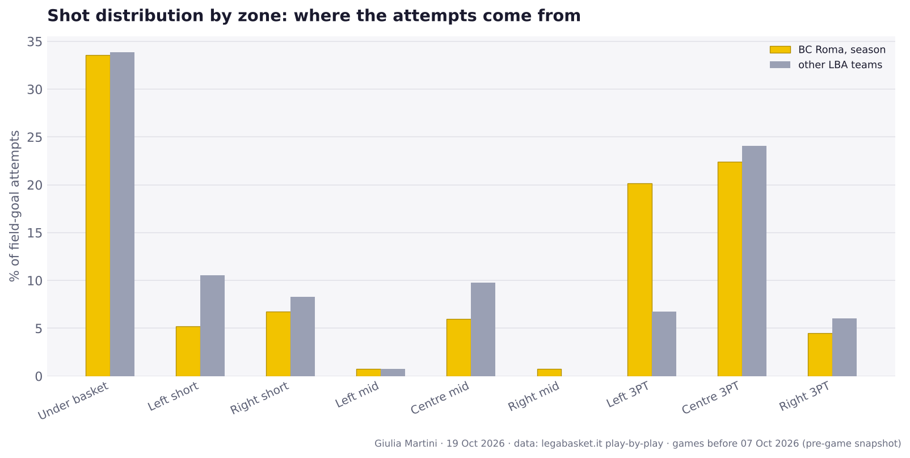
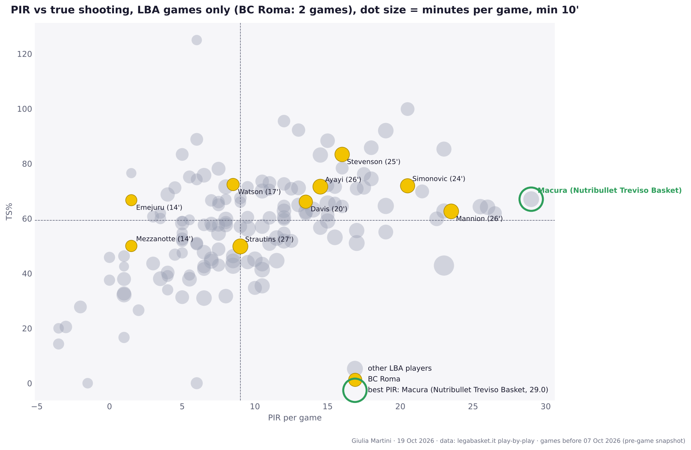
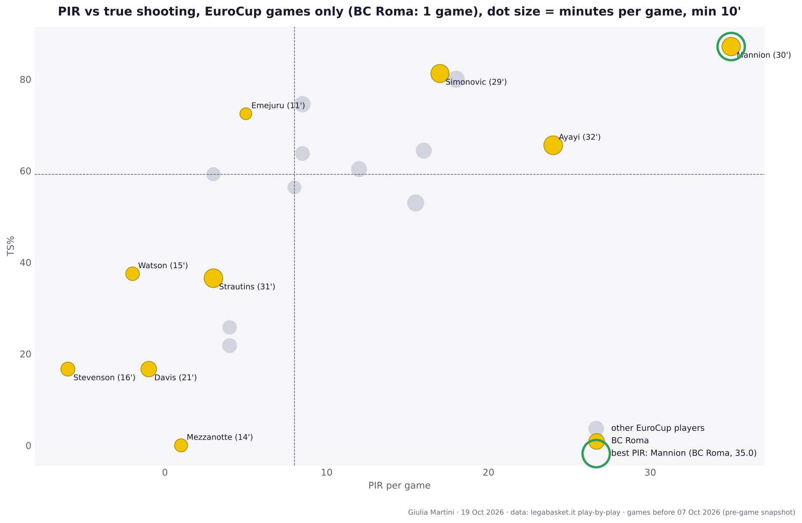
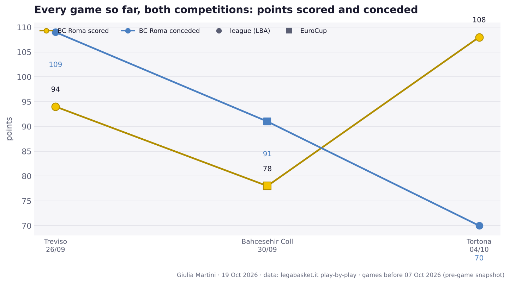

BC Roma before EuroCup: vs Lietkabelis Panevezys
EuroCup · Wednesday 07 October 2026
Pre-game snapshot: only data from games played before Wednesday 07 October 2026, in both competitions.
Author: Giulia Martini
Where BC Roma stands
LBA: 1-1 · 6th in the standings (2 points) · EuroCup: 0-1 · last five games (both competitions): LLW
- 09-26 · round 1: L 94-109 at Treviso
- 09-30 · EuroCup: L 78-91 at Bahcesehir College Istanbul
- 10-04 · round 2: W 108-70 vs Tortona
LBA standings before this game:

Standings table
| # | Team | Pts | W-L | Diff | Results | | ---: | --- | ---: | :---: | ---: | :---: | | 1 | Virtus Bologna | 4 | 2-0 | +30 | WW | | 2 | Napoli | 4 | 2-0 | +25 | WW | | 3 | Udine | 4 | 2-0 | +25 | WW | | 4 | Treviso | 4 | 2-0 | +18 | WW | | 5 | Venezia | 4 | 2-0 | +17 | WW | | 6 | **BC Roma** | 2 | 1-1 | +23 | LW | | 7 | Tortona | 2 | 1-1 | -30 | WL | | 8 | Verona | 2 | 1-1 | -5 | LW | | 9 | Trento | 2 | 1-1 | +2 | WL | | 10 | Varese | 2 | 1-1 | -13 | LW | | 11 | Milano | 2 | 1-1 | +1 | WL | | 12 | Trieste | 0 | 0-2 | -9 | LL | | 13 | Reggio Emilia | 0 | 0-2 | -11 | LL | | 14 | Cantù | 0 | 0-2 | -13 | LL | | 15 | Maxima Roma | 0 | 0-2 | -28 | LL | | 16 | Scafati | 0 | 0-2 | -32 | LL |Last game
LBA round 2, vs Tortona (2026-10-04): win 108-70.
Significant increase in playing time in that game (at least 8' played and either +7' or +30% versus the average in earlier games):
| Player | Last game | Average before | Change |
|---|---|---|---|
| Mezzanotte | 19' | 11' (2 GP) | +8' (+68%) |
| Emejuru | 16' | 11' (2 GP) | +5' (+49%) |
Team numbers to date
| LBA | EuroCup | |
|---|---|---|
| Games | 2 | 1 |
| Record | 1-1 | 0-1 |
| Points per game | 101.0 | 78.0 |
| Points allowed per game | 89.5 | 91.0 |
| Offensive rating | 135.4 | 105.5 |
| Defensive rating | 116.9 | 121.5 |
| Net rating | 18.5 | -15.9 |
| Pace (possessions per 40') | 75.6 | 74.4 |
| eFG% | 65.7 | 52.4 |
| TOV% (per 100 poss.) | 16.8 | 20.3 |
| OREB% | 45.8 | 32.4 |
| FT rate (FTA/FGA) | 29.1 | 29.0 |
| 3PA per game | 31.5 | 28.0 |
| 3P% | 38.1 | 25.0 |
| 2P% | 73.2 | 64.7 |
| FT% | 66.7 | 72.2 |
| Assists per game | 24.5 | 17.0 |
| Opp. eFG% | 50.8 | 57.1 |
| Opp. TOV% (forced) | 11.1 | 17.4 |
| DREB% | 71.4 | 57.9 |
Ratings are points per 100 possessions. eFG% = (2P + 1.5 × 3P) / FGA · TOV% = turnovers per 100 possessions · OREB% = share of available offensive rebounds · FT rate = free throw attempts per field goal attempt.
Roster
Per-game averages before this game, LBA + EuroCup. Shooting: percentage (attempts per game).
| Player | Pos | Ht | GP | MIN | PTS | REB | AST | PIR | FG% (FGA) | 3P% (3PA) | FT% (FTA) | PPG LBA | PPG EC | |
|---|---|---|---|---|---|---|---|---|---|---|---|---|---|---|
| Strautins | – | – | 3 | 28.5 | 11.0 | 4.7 | 2.7 | 7.0 | 38 (10.7) | 27 (5.0) | 50 (3.3) | 12.0 | 9.0 | |
| Ayayi | – | – | 3 | 28.2 | 13.3 | 4.3 | 3.7 | 17.7 | 60 (8.3) | 29 (2.3) | 89 (3.0) | 12.0 | 16.0 | |
| Mannion | – | – | 3 | 27.5 | 19.7 | 3.7 | 7.0 | 27.3 | 56 (11.3) | 37 (6.3) | 93 (5.0) | 15.0 | 29.0 | |
| Simonovic | – | – | 3 | 25.8 | 15.7 | 8.0 | 0.7 | 19.3 | 72 (9.7) | 33 (2.0) | 50 (2.0) | 17.0 | 13.0 | |
| Stevenson | – | – | 3 | 22.0 | 10.7 | 2.0 | 2.7 | 8.7 | 50 (8.0) | 47 (5.7) | – (0.0) | 15.0 | 2.0 | |
| Davis | – | – | 3 | 20.6 | 7.7 | 1.3 | 4.0 | 8.7 | 48 (7.0) | 11 (3.0) | 100 (0.7) | 10.5 | 2.0 | |
| Watson | – | – | 3 | 16.4 | 9.7 | 1.7 | 0.7 | 5.0 | 56 (6.0) | 46 (4.3) | 33 (3.0) | 13.0 | 3.0 | |
| Mezzanotte | – | – | 3 | 13.9 | 1.7 | 2.0 | 0.0 | 1.3 | 29 (2.3) | 25 (1.3) | – (0.0) | 2.5 | 0.0 | |
 |
Emejuru | – | – | 3 | 12.5 | 2.7 | 2.7 | 0.0 | 2.7 | 75 (1.3) | – (0.0) | 50 (1.3) | 2.0 | 4.0 |
| Flowers | – | – | 1 | 5.0 | 2.0 | 1.0 | 1.0 | 3.0 | 0 (1.0) | 0 (1.0) | 100 (2.0) | 2.0 | – | |
| Iuzzolino | – | – | 3 | 1.7 | 0.7 | 0.0 | 0.0 | 0.3 | 100 (0.3) | – (0.0) | – (0.0) | 1.0 | 0.0 | |
| Odzebe | – | – | 1 | 3.0 | 0.0 | 0.0 | 0.0 | 0.0 | – (0.0) | – (0.0) | – (0.0) | 0.0 | – | |
| Tavernelli | – | – | 1 | 1.0 | 0.0 | 1.0 | 1.0 | 2.0 | – (0.0) | – (0.0) | – (0.0) | 0.0 | – |
Assists

Passer (rows) to scorer (columns), assisted baskets linked in the LBA play-by-play, games before this one. Most frequent pairs: Mannion → Simonovic (7), Mannion → Stevenson (4), Mannion → Strautins (3), Davis → Stevenson (3), Ayayi → Simonovic (3).
Shot zones


Efficiency: true shooting vs PIR
LBA games only

EuroCup games only

EuroCup: 1 game for BC Roma; the grey dots are the players of the other teams in the EuroCup box scores collected so far, so read it as a very small sample.
Every game so far
